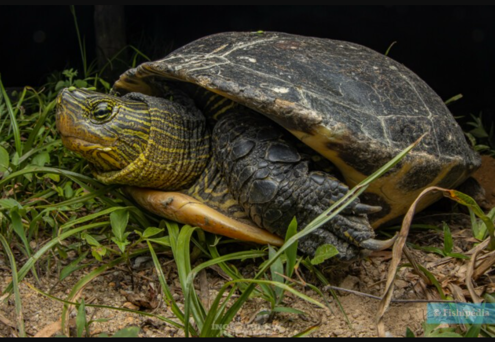

I love many things, playing tower defenses, studying python, and overwatch to name a few. If your curious I main Doomfist, Mauga, and Cassidy. Though I play many different DPS. My favorite foods are curry goat, jerk steak, and cheese fries. I also love candy, especially Smarties, Airheads, and Sweetarts.
Go ahead and get some at Sweetarts Candy.

Go to page 2